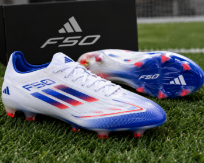

Adidas F50
Los Adidas F50 están diseñados para los jugadores más veloces en el campo. Confeccionados con una capellada sintética ultra ligera que garantiza un ajuste preciso y un control de balón excepcional, incorporan un forro interno transpirable para mantener tus pies frescos durante todo el partido. Su suela de alta tracción ofrece una aceleración explosiva y cambios de ritmo impecables.
$160.000